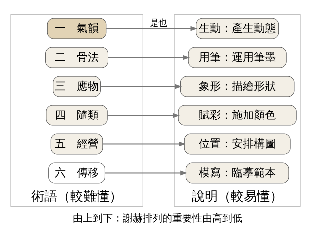
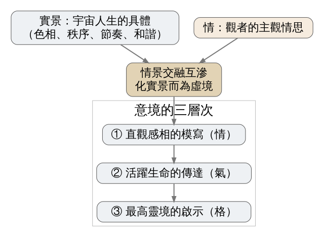
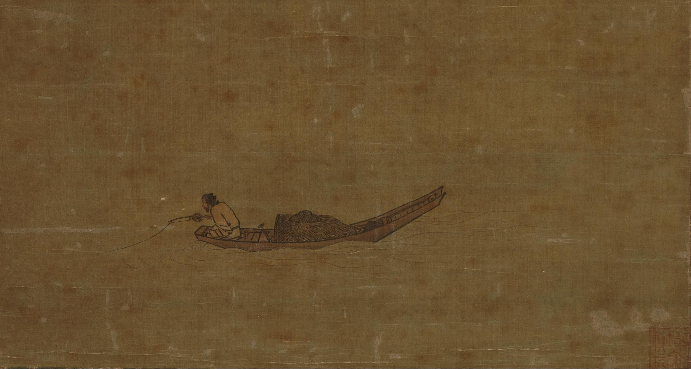

南朝畫論家謝赫替畫家評等時，把「氣韻」排在六條標準的第一條，把「臨摹範本」排在最後；一千四百年後，宗白華用「意境」一詞說明中國藝術怎樣把眼前的實景轉成心裡的虛境。今天練習看一張畫裡留下的空處：哪些空白只是沒畫，哪些空白在替畫面「呼吸」。
史料（依二手文獻：Goldin 2018，引陳傳席《六朝畫論研究》） 謝赫生卒年不詳，學者考訂他在 532 年之後才去世。他留下一本很薄的書《古畫品錄》，做的事情很像今天的評審：把前代畫家分成六個等級，每人寫幾句評語。書前的序列出評等用的六條標準，後人叫它「六法」。
評語寫得很不客氣。有一位畫家叫劉紹祖，擅長臨摹，畫麻雀、老鼠筆跡分明，常常比旁人出色，當時的人給他取了個外號叫「移畫」。謝赫的評語是「善於傳寫，不閑其思」，會照著畫，卻不懂原作者在想什麼；接著引《論語》的「述而不作」，說這不是畫的首要。劉紹祖被放在第五品。第二品的顧駿之也挨了一句：神韻和氣力比不上前代名家。
一位技術過硬、畫得出麻雀羽毛的人，只排在倒數第二級。謝赫心裡顯然有一把尺，量的東西比「像不像」更難說清楚。他給這把尺取的名字，就是「氣韻」。
經典理論｜謝赫《古畫品錄》序，六世紀前半
六法怎麼讀 六法的原文是六個句子並列，每句四個字加上「是也」，例如「骨法，用筆是也」。英國學者 W. R. B. Acker 在 1954 年的譯注裡提出一種讀法，至今被廣泛採用：每句前兩個字是比較難懂的術語，後兩個字是用白話去解釋它。照這個讀法，第一條是「氣韻，生動是也」，氣韻就是讓畫面產生動態。其餘五條依序是骨法（用筆）、應物（象形）、隨類（賦彩）、經營（位置）、傳移（模寫）（見圖 1）。

圖 1｜謝赫六法的結構：左側術語由右側兩字說明，由上到下重要性遞減。本課程依謝赫《古畫品錄》序，並依 Acker（1954）的斷句與 Goldin（2018）對六法排序的分析繪製。授權：本課程自製圖解，來源頁面
六法有先後 美國漢學家 Paul R. Goldin 在 2018 年的論文裡指出，從《古畫品錄》各條評語看得出六法是依重要性排列的。謝赫最推崇氣與骨的幾位畫家，例如衛協、張墨、荀勖、曹不興，全在第一品；只會臨摹的劉紹祖落在後段。Goldin 因此主張把「六法」譯成六項評判標準（Six Criteria），它們本來就是拿來替畫家排名次的尺。
史料（依二手文獻：Goldin 2018） 「氣韻」這個詞從哪裡來，學界有爭論。錢鍾書在《管錐編》裡認為，謝赫把原本用來品評真人風度的詞，拿去評論畫中的人物與物象。Goldin 用古籍資料庫查證後提出另一種看法：「韻」字到東漢才出現，最早的意思和音樂有關，指和諧的聲音；以「韻」組成的詞常被拿來稱讚人，也被拿來評論文藝，看不出哪一種用法比較早。和謝赫差不多同時，蕭子顯在《南齊書》裡也用「氣韻」談文章。所以氣韻帶著聽覺的底子：一張畫有氣韻，有點像一段聲音彼此應和。
經典理論｜宗白華〈中國藝術意境之誕生〉，初刊《時與潮文藝》1943 年 3 月創刊號，收入《美學散步》（上海人民出版社，1981）
意境是情與景的結晶 宗白華先把人和世界打交道的方式分成幾種境界：功利、倫理、政治、學術、宗教，各自追求利、愛、權、真、神。藝術境界介於學術與宗教之間，追求美。他描述藝術境界的做法：以宇宙人生的具體事物為對象，玩賞它的色彩、秩序、節奏與和諧，從中照見自己最深的心靈，然後「化實景而為虛境」，用形象作象徵。他把意境界定為「情」與「景」交融的結晶品（見圖 2）。

圖 2｜宗白華的意境構成與三層次。本課程依宗白華〈中國藝術意境之誕生〉（1943，收入《美學散步》1981）繪製。授權：本課程自製圖解，來源頁面
他舉了清代龔自珍（定庵）寫北京西山的一段話：西山有時遠得像隔在雲外，有時又近得像落在桌前，和天氣晴雨無關。宗白華的解讀是，這種忽遠忽近不是物理上的距離，是心中意境的距離。
三個層次 宗白華說意境可以由淺到深分成三層：直觀感相的模寫、活躍生命的傳達、最高靈境的啟示。他借用「情、氣、格」三個字對應：情是心靈對印象的直接反映，氣是生氣遠出的生命，格是映射人格的高尚格調。謝赫說的「氣韻」大致落在第二層。
道、舞、空白 文章最後一節談中國藝術意境的結構，標題就是「道、舞、空白」。他寫中國畫家面對一片空白的絹或紙，不肯讓物體的陰影把畫面填實，直接在這片虛白上用筆墨；畫裡的光也不是照在物體上的寫實光線，而是在整幅畫面流動的「宇宙靈氣」。在他看來，空白是畫面的一部分，和筆墨一起運作。
史料｜傳馬遠《寒江獨釣圖》，南宋，絹本淡彩，東京國立博物館藏
這張畫在日本文化廳的文化遺產資料庫裡登錄為「絹本淡彩寒江独釣図（伝馬遠筆）」，1931 年指定為重要文化財。名字前面的「伝」表示作者是傳統上的歸屬，並沒有確證。網路上常見這張畫標著「1195 年」，東京國立博物館與文化廳的著錄只寫南宋，這裡不採用那個年份（見圖 3）。

圖 3｜傳馬遠，《寒江獨釣圖》，南宋，絹本淡彩，一幅，東京國立博物館藏（TA-140），重要文化財。授權：Public domain（PD-Art／PD-old-100），來源頁面
先數「實」的東西 看圖 3，畫裡真正畫出來的只有一葉小船、船上一個彎身的釣者、一根釣竿，船邊幾道淡淡的水紋。沒有岸，沒有遠山，沒有天際線。整張絹的大半面積什麼都沒畫。
空白在做什麼 如果把那片空白當成「沒畫完」，這張畫只是一張小船的特寫。可是那幾道水紋讓空白變成了水：觀者看到船邊有波紋，就自動把整片絹讀成一大片江面。宗白華在另一篇文章〈中國藝術表現裡的虛和實〉（初刊《文藝報》1961 年第 5 期，亦收入《美學散步》）引清代笪重光《畫筌》的話：「實景清而空景現」。實的部分畫得清楚，空的部分才顯得出來。這張畫的「實景」就是那條船和幾道水紋，畫得越少越準，周圍的「空景」越大。
六法裡的「經營位置」 船並沒有放在畫面正中央，四周留下的空白也不平均。你可以試著用手遮住畫面一側的空白，船立刻顯得擠，像被框住；把空白還回去，船又浮在水上。這就是謝赫第五條「經營，位置是也」在做的事。按照謝赫的排序，位置只排第五，構圖是為氣韻服務的手段。
氣韻在哪裡 這張畫的「生動」來自很小的地方：釣者彎身的弧度、釣竿伸出去的斜線、水紋從船邊往外擴散。畫面幾乎靜止，但那根斜伸的竿子和散開的水紋，讓眼睛從船出發，一路滑進空白。照 Goldin 對「韻」的考證，可以把它想成一個音發出之後在空間裡的餘響；這是本課程的類比，不是謝赫或宗白華的原話。
三層次怎麼讀這張畫 用宗白華的三層次來看：第一層，你看見一個冬天在江上釣魚的人，這是直觀感相。第二層，你感覺到水的寒和靜，以及那人專注的身體，這是生命的傳達。第三層因人而異，有人讀到孤獨，有人讀到自在，畫面沒有替你決定。畫題的「寒江」「獨釣」也讓人聯想到柳宗元〈江雪〉的末句；這張畫是否依那首詩而作，並沒有文獻可證。
經典理論｜宗白華〈中國藝術表現裡的虛和實〉，《文藝報》1961 年第 5 期
宗白華在這篇文章裡把畫的空白搬到戲曲舞台上。他說中國舞台一般不設逼真的布景，只用桌椅這類少量道具，並引老藝人的話：「戲曲的布景是在演員的身上」。演員用程式和身段把人物的行動演得真切，觀眾就忘了要求布景，舞台上留出的空處，讓人物有地方把劇情演出來。
他舉的例子是《秋江》：舞台上沒有江，也沒有船，只有船翁手上一支槳，加上陳妙常搖曳的舞姿，觀眾就能「神遊」江上。另一個例子是「趟馬」，演員用一連串身段，讓人看出馬在跑，也感到人騎在馬上；他提醒，演員要是心中沒有那匹馬，只顧賣弄武藝，動作就成了空洞的程式。
拿來對照《寒江獨釣圖》：一支槳對應畫裡那幾道水紋，空舞台對應那片空絹。兩者都只把最關鍵的一點「實」做準，剩下的空間交給觀者去補。
誤解一：「氣韻生動」是一個四字成語，意思是畫得很生動 照 Acker 的斷句，「生動」是用來解釋「氣韻」的，兩者不是並列的形容詞。這個讀法今天被廣泛接受，但也有學者反對，例如 James Cahill 1961 年的〈The Six Laws and How to Read Them〉與方聞（Wen C. Fong）1966 年的論文。另外，「生動」在這裡指產生動態、生出動勢，和今天說「寫得很生動」的意思不完全一樣。
誤解二：意境就是「有感覺」「很有 fu」 宗白華的意境有結構：要有具體的景，要有情，兩者交融之後還分三個層次。一張畫讓你覺得「有氣氛」，可能只停在第一層。
誤解三：留白就是少畫一點 「實景清而空景現」的重點在前半句。《寒江獨釣圖》的空白能變成江面，是因為船和水紋畫得準；空白要靠旁邊的實筆才能被讀出意義。
誤解四：六法源自印度，或六法是謝赫自己發明的 六法和印度繪畫「六支」（ṣaḍaṅga）的關係是一個老假說，Victor Mair 在 2004 年仍為它辯護。Goldin 2018 年的論文指出，六法「X，Y 是也」的句式在《說文解字》序、《文心雕龍》都找得到，句法本身看不出外來的痕跡；他也認為這些術語多半不是謝赫首創，謝赫是把當時流行的詞整理成評畫標準。
看（5 分鐘） 找一扇窗、一面牆或一張餐桌，先數「實」的東西：有幾件物品？再看空的部分：哪一塊空白讓你覺得舒服，哪一塊讓你覺得「少了什麼」？試著說出原因，例如它旁邊有沒有一件東西在「撐」它。
做（10 分鐘） 找一件小東西，例如一個杯子、一顆橘子或一把鑰匙，放在一塊素色的桌面、床單或地板上。
回顧（5 分鐘）
來源 | 來源類型 | 查核日期 |
史料（依二手文獻）／經典理論 | 2026-11-03 | |
經典理論 | 2026-11-03 | |
經典理論 | 2026-11-03 | |
經典理論（書目） | 2026-11-03 | |
書目查核 | 2026-11-03 | |
史料 | 2026-11-03 | |
圖 3 授權頁面：Wikimedia Commons，Angler on a Wintry Lake, by Ma Yuan, 1195.jpg | 圖片授權 | 2026-11-03 |
延伸閱讀：Goldin 的論文只有十五頁，第一節談六法的句法與排序，適合配著圖 1 讀；宗白華〈中國藝術意境之誕生〉的第五節「道、舞、空白」和今天的主例最相關。